Zennの「Test」のフィード
フィード
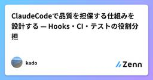
ClaudeCodeで品質を担保する仕組みを設計する — Hooks・CI・テストの役割分担
Zennの「Test」のフィード
Hooksを使う理由CLAUDE.mdやSkillに書いた指示はお願いであって、強制ではない確実に実行されるのはHooksだけであるそのため、品質を担保するチェックは、確実に実行されるHooksに置くことを原則とした下記、各タイミングと実行、内容であるタイミング実行内容ファイル修正時Hookslint、typecheck、関連する単体テストコミット時Hooks単体テスト全体、結合テストマージ時CI全テスト＋E2E 1.ファイル修正時のチェック（変更したファイルに関連する単体テストのみを実施）開発用ブランチでファイル修正...
9時間前
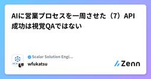
AIに営業プロセスを一周させた（7）API成功は視覚QAではない
Zennの「Test」のフィード
最終回です。生成が成功したあとに何をしたか、という話をします。slide-forge の共通契約に、たった 1 行こう書かれています。API success is not visual QA.（API の成功は、視覚 QA ではない）この 1 行のために、今回 5 件の欠陥が見つかりました。 1. 検査は 2 段構えGate 1（オフライン）Gate 2（視覚 QA）いつ生成前生成後何を見る座標・文字量・重なりの計算サムネイル画像コストAPI を呼ばない（無料）画像を読むコマンド--dry-run --strict...
11時間前

テストケースの「十分性」を LLM に判定させる ── QA Gauge を作った理由と、最初の失敗
Zennの「Test」のフィード
テストケース群が「十分か」を判定する仕組みを作っています。社内では QA Gauge と呼んでいます。テストケースを生成する AI ではなく、提出されたテストケース群に過不足がないかを判定する AI です。まだ「委譲できた」とは言えない段階なので、この記事はその実況の 1 本目になります。一言でいうと、QA の「判断」を LLM に委譲できるか。判定器そのものより先に、判定結果を評価する仕組みを作っている、という話です。 なぜ作ろうと思ったかきっかけは、QA の関与が局所的になっていることでした。QA チームが見られるのは依頼された案件だけで、本当は全案件に関与したい。ですが ...
11時間前
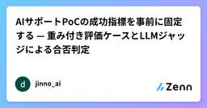
AIサポートPoCの成功指標を事前に固定する — 重み付き評価ケースとLLMジャッジによる合否判定
Zennの「Test」のフィード
生成AI製品のPoC (概念実証) の合否が「担当者の印象」で決まることがある。デモが雰囲気よく見えた、応答がそれっぽかった、で採用判断をしてしまう。この記事は、AIサポート (カスタマーサポート自動応答) のPoCの成功指標を開始前に固定し、重み付きの評価ケース通過率で合否を判定する測定設計の記録である。対象は、LLMの応答品質をPoCで判定したいエンジニアと評価担当。判定をLLMジャッジに委ねる構成で、ジャッジ自身の出力もスキーマ検証する前提の話をする。検証日: 2026-09-03。評価対象は日本語のサポート応答、判定器はLLM + Valibot 1.4.2による出力検証。...
1日前
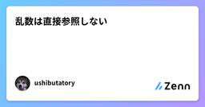
乱数は直接参照しない 1
1
Zennの「Test」のフィード
概要乱数はUnity標準のクラスが用意されていますが、各所で直接参照することはせず、インタフェース経由でアクセスするようにしています。直接参照インタフェース経由乱数アルゴリズムの変更面倒くさい実装クラスの改修、或いは差し替えで対応できる特定条件時のテスト相当難しいスタブで対応できる 準備乱数を使いたい処理が定義されているレイヤーにインタフェースを定義します。namespace MyGame.Domain{ /// <summary> /// 乱数生成器のインターフェース /// </su...
1日前
PRのCI稼働時間を7割削減した話 1
Zennの「Test」のフィード
はじめにイノベーション開発チームのkuniです！現在はITトレンドのリプレイスPJに従事しています。最近の開発ではAIエージェントに実装を任せることが多く、PRやテストコードが増えるようになりました。アウトプットが多くなった反面、CIの稼働時間が増えるという問題が発生しました。今回はCIの稼働時間を、CIの目的を維持したまま削減した話をしたいと思います。最終的にはCIの1runあたりの稼働時間を144分から39分（73%削減）にすることができました。この記事では、実際に行った3つの対応を紹介します。!記事に載せているコードは、要点だけを抜き出したものです。実際のコ...
2日前
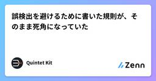
誤検出を避けるために書いた規則が、そのまま死角になっていた
Zennの「Test」のフィード
設定ファイルの検査ツールを作っています。README の1画面目にこう書いてあります。指摘は、公式ドキュメントが「エラーになる」「スキップされる」「無視される」と明記しているものだけ。この方針の帰結として、あえて検査しないものの一覧があります。いちばん分かりやすいのはこれ。未知のキー。 公式が「スキーマは最新 CLI に遅れる」と明記しているので、検査すると新機能を使うたびに誤検出する。良い規則だと思っています。いまも思っています。そしてこれが、自分の製品が4箇所で壊れた行を数日間配っていた理由です。 検査は通っていた有料ガイドに章を足そうとして、先に自分の製...
2日前
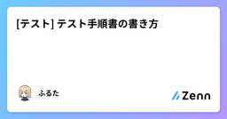
[テスト] テスト手順書の書き方 1
Zennの「Test」のフィード
🌱 はじめに2026年8月27日に発売された『QAエンジニア入門 〜チームで品質を高める連携のしかた』（岩崎 駿 著）を読みました。テスト手順書の書き方について、誰にも教わることがなく「自分だけ分かればいいや」という手順書を作成しておりました。改めて再学習のために備忘録として残します。https://gihyo.jp/book/2026/978-4-297-15832-3「自分だけ分かればいいや」で書いた手順書は、次のような困り方をします。3か月後の自分が読んでも、どのアカウントで試したのか分からないレビュー時に「その手順で本当に不具合が再現するのか」を追えない他の...
2日前
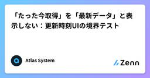
「たった今取得」を「最新データ」と表示しない：更新時刻UIの境界テスト
Zennの「Test」のフィード
APIから応答を受け取った直後でも、その中身が最新とは限りません。キャッシュや集計処理を経たデータなら、「今取得した」と「今の状態を表している」は別の話です。この記事では、ダッシュボードの更新時刻を表示する小さな関数を作り、境界値を固定したテストで確かめます。対象はJavaScriptでAPIの取得結果を表示する開発者です。通信、ウォレット接続、外部ライブラリは使いません。 まず、何の時刻かを分ける同じ「更新時刻」というラベルに、次の値を混ぜないようにします。名前意味それだけでは分からないことreceivedAtMsこのクライアントが応答を受信した時刻デ...
3日前
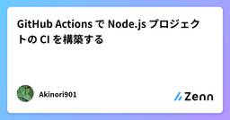
GitHub Actions で Node.js プロジェクトの CI を構築する
Zennの「Test」のフィード
GitHub Actions で Node.js プロジェクトの CI を構築する 概要Node.js プロジェクトに GitHub Actions で CI を導入し、「Pull Request を出したら自動で Lint・型チェック・テストが走る」状態をゼロから構築するハンズオンです。最小構成から始め、複数バージョンでのマトリクス実行、キャッシュによる高速化、必須チェック化まで段階的に進めます。この記事のワークフローは、パブリックに公開されている GitHub Actions・npm の仕様のみに基づいています。 環境Node.js（LTS 系。この記事では Ac...
3日前
PoCで終わらせない最適化
Zennの「Test」のフィード
PoCで動いた最適化モデルを、本番システムとして動かし続けるための本です。100行のシフト最適化PoCを題材に、モデルのテスト設計、入力データのバリデーション、実行不能の仕様化とシミュレーション評価、非同期API化と可観測性、解の説明責任・human-in-the-loop・ドリフト監視・効果検証までを扱います。求解だけで終わらせず、現場で使い続けられるシステムへ育てます。
3日前
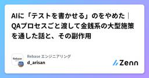
AIに「テストを書かせる」のをやめた｜QAプロセスごと渡して金銭系の大型施策を通した話と、その副作用
Zennの「Test」のフィード
こんにちは、d_arisan です。株式会社RebaseでQAとして参画しています。今回は、テスト設計のプロセスそのものをAIスキルとして組み立て、実務で回してみた話を書きたいと思います。うまくいった部分だけでなく、「半自動化したことで新しく発生した面倒」まで含めて共有できればと思います。3行サマリQA専任が少人数のまま複数プロダクトを見る限界がきて、QAプロセスごとAIスキルにした金銭の計算が絡む大規模施策を、リリース後の不具合報告なしで通せたただし検証コストは消えず、属人化は「スキルを書ける人が限られる」に置き換わっただけだったなお本記事は個人の実践記録で、参画先...
4日前

AIエージェントの評価方法（AgentOps）を設計する時に調べた事と得られた知見
Zennの「Test」のフィード
初めにどうも、某自社開発系の会社でエンジニアをしている者です。私は去年の年末ごろ、業務の方でAIエージェントが絡んだ機能の開発を担当していました。その際、AIエージェントの運用設計（AgentOps）、特にその中核となる「評価方法」についても設計する機会を頂けました。今でも勿論そうですが、当時は情報がかなり少なく自分でも一次情報を求めて奔走していました。この記事では、AgentOpsを設計する際に実際に調べた事やそこで得られた知見を備忘録的にまとめたいと思います。こういった0から1を考える際、生成AIに頼り切るのはまだ難しい現状があると思います。この記事では評価設計の知...
4日前
[テスト] 観点まとめ
Zennの「Test」のフィード
🌱 はじめに2026年8月27日に発売された『QAエンジニア入門 〜チームで品質を高める連携のしかた』（岩崎 駿 著）を読みました。観点について綺麗にまとめられていたので、備忘録として残します。https://gihyo.jp/book/2026/978-4-297-15832-3本記事で言う「観点」は、テストで何を確認するかの切り口（テスト観点）を指します。説明が具体的になるよう、オンラインショップ（商品を検索してカートに入れ、クーポンを使って購入するEC（電子商取引）サイト）を題材にします。!例文の - は観点が抜けた確認、+ は観点を踏まえた確認を表します例文...
4日前
テスト開始を待たない QA ー テスト以外でも価値を発揮するための実践例 1
Zennの「Test」のフィード
はじめにこんにちは。ウェルスナビで QA を担当している船場です。本記事では QA エンジニアが後工程のテストの実施以外でも品質向上に貢献した次の 3 つの取り組みについて紹介します。仕様共有のミーティングを「共同レビューの場」にするテストレベルごとの担当チームの振り分けテスト設計技法をチーム全員の仕様理解のために活用 想定読者テストの実施だけでなく、開発プロセスの改善にも関わりたい QA エンジニアシフトレフトに取り組みたいものの、具体的な始め方が分からない QA エンジニアQA チームと連携し、開発工程から品質を作り込む方法を検討しているエンジニア、P...
5日前
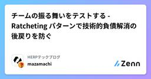
チームの振る舞いをテストする - Ratcheting パターンで技術的負債解消の後戻りを防ぐ 41
Zennの「Test」のフィード
借金は、返すこと以上に新たに借りないのが重要である。技術的負債でも同様で、解消が大変なことはもちろんだが、それ以上に解消したはずの負債が知らないうちに積み増されるのが一番キツい。誰かが地道に前に進めてくれているのに、別の誰かが悪気なく新たな負債を生みうる。また、一旦解消しても数年後に負債が復活することもある。AI コーディングの時代になって負債の解消は進めやすくなったが、確率的な手法に頼るかぎり、負債が新たに生まれるリスクは避けきれない。これを防ぐため HERP Hire のコードベースでは、技術的負債の解消が後戻りしない「Ratcheting」と呼ばれる仕組みを入れてみた。...
5日前
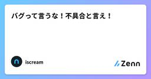
バグって言うな！不具合と言え！
Zennの「Test」のフィード
初心者 不具合 バグ テスト バグってなんだ？あなたがソフトウェアを使っていて、思ったように動いてくれない時がある。その時にバグだ！って思う人が多いだろうでも、バグは原因について踏み込んだ言葉なので、原因がわからない限り、バグという言葉は避けて「不具合」をつかえ。君が観測したのは、「自分が思っているように動作をしない挙動」であって、原因ではない。「バグ」と言うことにより、あなたは暗に原因はプログラマの責任と言ってしまっている。 では、料理だったらどうだろう？飲食店で、これは「不味い」というと料理人に喧嘩売ってるだろ？普通は「口に合わない」と言うものだ。 もっと客...
5日前
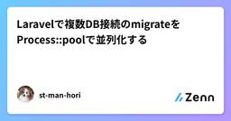
Laravelで複数DB接続のmigrateをProcess::poolで並列化する
Zennの「Test」のフィード
!この記事のサンプルコードは以下のリポジトリにあります。https://github.com/st-man-hori/laravel-multiple-databases はじめにマルチテナントや外部システム連携などで、1つのLaravelアプリケーションが複数のDB接続を持つ構成になることがあると思います。こうした構成では、DB接続ごとに独立したmigrationディレクトリを持たせる方法がありますが、php artisan migrateはデフォルトでは接続を1つずつ順番にマイグレーションします。接続数が増えたり、1つ1つのマイグレーションが重かったりすると、この「直列...
6日前

[自分用メモ] pytest の骨格を理解したい
Zennの「Test」のフィード
自分用のメモですAPI のテストフォルダを開くと、conftest.py と test_*.py が並んでいます。フィーチャーテストという言葉は聞いたことがあっても、いま見ているファイルが何のスタックの上で、何を書いて、何を通しているのかが先に揃っていないと、後半の fixture や yield が浮きます。この記事では、よくある API プロジェクトを架空の構成で置いたあと、フィーチャーテストの位置づけを整理し、pytest がそれをどう実行するかを人に渡せる粒度まで落とします。コードはすべて架空です。想定読了時間は 10〜15 分です。 前提：スタック、構成、書いている...
7日前

コードレビューで毎回指摘するApexアンチパターン5つ──なぜ本番で爆発するのか
Zennの「Test」のフィード
アンチパターンと本番障害は表裏一体結論から言うと、コードレビューで指摘される項目のほとんどは「可読性」や「お作法」の話ではありません。「これを放置すると本番でオンコールが鳴る」という話です。レビューを受ける側になると、指摘が細かく感じる瞬間がある。「動いてるのに何がダメなんだ」と。その感覚は、指摘の先にある障害シナリオが見えていないだけ、というケースがほとんど。逆に言えば、シナリオが見えていれば指摘は納得できるし、次からは自分で気づけるようになる。ここで挙げる5つは、私がこれまで中規模（数百ユーザー）環境で実際にオンコール対応やデバッグで踏み抜いたものに絞っています。一般的なア...
7日前